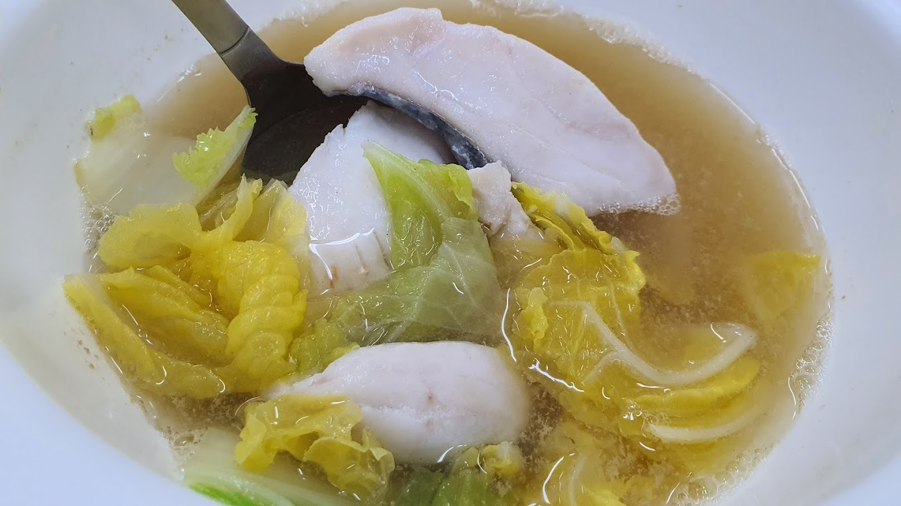

FISH SOUP RECIPE

Description
A hearty bowl of fish soup,something that can be both filling yet a perfect meal in a diet.
Batang Fish Soup originates from indonesia or Malaysia,
countries known for loud flavour copious amounts of spices and a flavour profile that is
in your face. However the humble fish soup is a departure from this, it is a dish that truly bucks the trend
with simple ingredients, a clean and refined taste which while filling does not feel like an over indulgence.But
most impressively it retains it heritage with its loud flavour in its mackerel and broth making it to me a chef-d'œuvre of healthy southeast asian cooking.
Ingredients
- 500g of batang
- 2 tomatoes
- cabbage (quantity is preference based)
- tofu
- 2 tbsp of sesame oil
- 2 tbsp of light soy sauce
- 2 tbsp of chinese wine
- 1 tbsp of cornstarch
- 1 tbsp of salt
STEPS
Preparing the fish soup
- Add the fish slices in a small bowl with enough water to cover the fish. Add salt and massage onto flesh for a minute. Add cornstarch to the mixture (stirring or massaging the fish to dissolve into the liquid) and soak fish for 3-4 minutes. Rinse the fish about 1-2 times to wash off the salt and corn starch, then drain.
- Marinade the fish with sesame oil, soy sauce and Chinese wine (left it out for my case because I was making it for the family which includes my helper).
- Leave the fish to marinade for about 10 minutes in the fridge.
Cooking the Soup
- Bring 1.5 litres of water to a gentle boil over a medium flame. Add the ikan bilis and ginger, and let it boil for about 5 minutes.
- Add the tomatoes and let it cook for 1-2 minutes.⠀
- Add the marinated fish and chinese spinach. You know it’s done when the fish becomes opaque (about 1-2 minutes). You can turn off the heat once the mixture comes to a very gentle boil.
- Add the evaporated milk if you prefer a milkier consistency (optional).
- Serve immediately